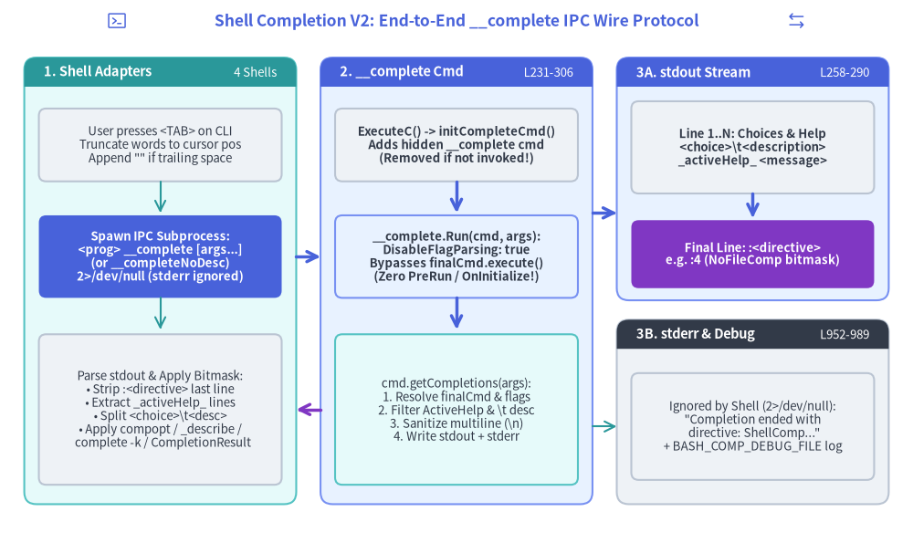
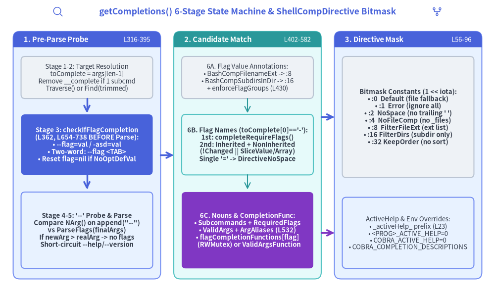

Chapter 5: Shell Completion V2 Engine — __complete Protocol, getCompletions State Machine & 4-Shell Script Generators
While legacy completion generators (bash_completions.go, 649 LOC) attempted to compile static command trees and flag lists into massive shell scripts, Cobra's Shell Completion V2 Engine (completions.go, active_help.go, shell_completions.go — 1,181 LOC) combined with the four V2 shell script generators (bash_completionsV2.go, zsh_completions.go, fish_completions.go, powershell_completions.go — 1,438 LOC) moves the entire completion intelligence into the compiled Go binary itself. Whenever a user presses <TAB>, the shell invokes the binary with a hidden subcommand (<program> __complete [args...]), receives structured completion lines plus a trailing :<directive> integer bitmask over stdout, and translates that bitmask into native shell completion primitives.

Source Code
from drawlib.canvas import save, setup
from drawlib.icons import phosphor
from drawlib.lines import line
from drawlib.shapes import rectangle
from drawlib.smartarts import Panel
from drawlib.styles import Styles
from drawlib.text import text
setup(width=188, height=112)
phosphor.terminal_window((24, 107.5), width=4.5, style=Styles.Primary)
text(
(94, 107.5),
"Shell Completion V2: End-to-End __complete IPC Wire Protocol",
style=Styles.PrimaryBold.patch(text_size=12.5),
)
phosphor.arrows_left_right((164, 107.5), width=4.5, style=Styles.Primary)
# Panel 1: Shell Script Adapter (bash / zsh / fish / pwsh)
Panel(
"1. Shell Adapters",
"4 Shells",
style=Styles.SecondaryNeutral,
header_style=Styles.SecondaryFlat,
text_style=Styles.WhiteBold.patch(text_size=10.5),
description_style=Styles.White.patch(text_size=9.5),
header_height=6.0,
).draw((5, 8), width=56, height=92)
rectangle(
(33, 82),
width=50,
height=15,
style=Styles.Neutral.patch(shape_r=1.5),
text="User presses <TAB> on CLI\nTruncate words to cursor pos\nAppend \"\" if trailing space",
text_style=Styles.Dark.patch(text_size=9.5),
)
line((33, 74.5), (33, 68), arrow_head="->", style=Styles.Secondary)
rectangle(
(33, 59),
width=50,
height=17,
style=Styles.PrimaryFlat.patch(shape_r=1.5),
text="Spawn IPC Subprocess:\n<prog> __complete [args...]\n(or __completeNoDesc)\n2>/dev/null (stderr ignored)",
text_style=Styles.WhiteBold.patch(text_size=9.5),
)
line((33, 50.5), (33, 44), arrow_head="->", style=Styles.Secondary)
rectangle(
(33, 27.5),
width=50,
height=31,
style=Styles.Neutral.patch(shape_r=1.5),
text="Parse stdout & Apply Bitmask:\n• Strip :<directive> last line\n• Extract _activeHelp_ lines\n• Split <choice>\\t<desc>\n• Apply compopt / _describe /\n complete -k / CompletionResult",
text_style=Styles.Dark.patch(text_size=9.5),
)
# Panel 2: __complete Runtime Engine in Go Binary
Panel(
"2. __complete Cmd",
"L231-306",
style=Styles.PrimaryNeutral,
header_style=Styles.PrimaryFlat,
text_style=Styles.WhiteBold.patch(text_size=10.5),
description_style=Styles.White.patch(text_size=9.5),
header_height=6.0,
).draw((66, 8), width=56, height=92)
rectangle(
(94, 82),
width=50,
height=15,
style=Styles.Neutral.patch(shape_r=1.5),
text="ExecuteC() -> initCompleteCmd()\nAdds hidden __complete cmd\n(Removed if not invoked!)",
text_style=Styles.DarkBold.patch(text_size=9.5),
)
line((94, 74.5), (94, 68), arrow_head="->", style=Styles.PrimaryBold)
rectangle(
(94, 59),
width=50,
height=17,
style=Styles.PrimaryNeutral.patch(shape_r=1.5),
text="__complete.Run(cmd, args):\nDisableFlagParsing: true\nBypasses finalCmd.execute()\n(Zero PreRun / OnInitialize!)",
text_style=Styles.DarkBold.patch(text_size=9.5),
)
line((94, 50.5), (94, 44), arrow_head="->", style=Styles.PrimaryBold)
rectangle(
(94, 27.5),
width=50,
height=31,
style=Styles.SecondaryNeutral.patch(shape_r=1.5),
text="cmd.getCompletions(args):\n1. Resolve finalCmd & flags\n2. Filter ActiveHelp & \\t desc\n3. Sanitize multiline (\\n)\n4. Write stdout + stderr",
text_style=Styles.Dark.patch(text_size=9.5),
)
# Panel 3A: stdout Wire Stream
Panel(
"3A. stdout Stream",
"L258-290",
style=Styles.PrimaryNeutral,
header_style=Styles.PrimaryFlat,
text_style=Styles.WhiteBold.patch(text_size=10.5),
description_style=Styles.White.patch(text_size=9.5),
header_height=6.0,
).draw((127, 50), width=56, height=50)
rectangle(
(155, 81.5),
width=50,
height=19,
style=Styles.Neutral.patch(shape_r=1.5),
text="Line 1..N: Choices & Help\n<choice>\\t<description>\n_activeHelp_ <message>",
text_style=Styles.DarkBold.patch(text_size=9.5),
)
line((155, 72), (155, 67), arrow_head="->", style=Styles.PrimaryBold)
rectangle(
(155, 59.5),
width=50,
height=14,
style=Styles.AccentFlat.patch(shape_r=1.5),
text="Final Line: :<directive>\ne.g. :4 (NoFileComp bitmask)",
text_style=Styles.WhiteBold.patch(text_size=9.5),
)
# Panel 3B: stderr & Debug Log
Panel(
"3B. stderr & Debug",
"L952-989",
style=Styles.Neutral,
header_style=Styles.DarkFlat,
text_style=Styles.WhiteBold.patch(text_size=10.5),
description_style=Styles.White.patch(text_size=9.5),
header_height=6.0,
).draw((127, 8), width=56, height=38)
rectangle(
(155, 24),
width=50,
height=22,
style=Styles.Neutral.patch(shape_r=1.5),
text="Ignored by Shell (2>/dev/null):\n\"Completion ended with\n directive: ShellComp...\"\n+ BASH_COMP_DEBUG_FILE log",
text_style=Styles.Dark.patch(text_size=9.5),
)
# Inter-panel connectors
line((61, 59), (66, 59), arrow_head="->", style=Styles.PrimaryBold)
line((66, 27.5), (61, 27.5), arrow_head="->", style=Styles.AccentBold)
line((122, 68), (127, 68), arrow_head="->", style=Styles.PrimaryBold)
line((122, 24), (127, 24), arrow_head="->", style=Styles.Secondary)
save()
1. Ephemeral __complete Command Injection (initCompleteCmd, completions.go:231–306)
During ExecuteC() (command.go:1110), right after InitDefaultHelpCmd() and before InitDefaultCompletionCmd(), the root command calls c.initCompleteCmd(args).
1.1 Anatomy of the Hidden __complete Command (completions.go:28–35, 232–295)
initCompleteCmd constructs a hidden Command configured with:
Use: "__complete [command-line]"(ShellCompRequestCmd = "__complete"atL31),Aliases: []string{"__completeNoDesc"}(ShellCompNoDescRequestCmd = "__completeNoDesc"atL34),Hidden: trueandDisableFlagsInUseLine: true(L235–236),DisableFlagParsing: true(L237): Crucial soExecuteC()'s initialFind(args)orTraverse(args)does not strip or parse flags meant for the target command being completed! Instead,__completereceives the entire raw user command line as its positionalargsslice.Args: MinimumNArgs(1)(L238): Requires at least the word currently being completed (toComplete, which is""if the user pressed<TAB>after a space).
1.2 Why initCompleteCmd Immediately Removes __complete on Normal CLI Runs (completions.go:296–305)
After attaching completeCmd via c.AddCommand(completeCmd), initCompleteCmd immediately probes c.Find(args):
// completions.go:296-305
c.AddCommand(completeCmd)
subCmd, _, err := c.Find(args)
if err != nil || subCmd.Name() != ShellCompRequestCmd {
// Only create this special command if it is actually being called.
// This reduces possible side-effects of creating such a command;
// for example, having this command would cause problems to a
// cobra program that only consists of the root command, since this
// command would cause the root command to suddenly have a subcommand.
c.RemoveCommand(completeCmd)
}
Why is this immediate removal necessary even though completeCmd.Hidden is true?
Recall from Chapter 4 that Command.HasSubCommands() (command.go:1619–1626) checks len(c.commands) > 0 and only ignores c.helpCommand—it does not ignore arbitrary hidden commands! If __complete remained attached during a normal CLI invocation of a single-command root binary (e.g., mytool file1.txt), rootCmd.HasSubCommands() would evaluate to true, causing legacyArgs() (args.go:35) to reject file1.txt with unknown command "file1.txt" for "mytool". By removing completeCmd whenever subCmd.Name() != "__complete", Cobra guarantees zero side effects on normal CLI execution.
1.3 Why __complete Never Calls finalCmd.execute() (Zero Hook Side Effects)
When the user presses <TAB>, ExecuteC() resolves cmd to completeCmd (__complete) and invokes completeCmd.execute(flags). Because completeCmd defines no PersistentPreRun* or PreRun* hooks, and because its Run closure calls cmd.getCompletions(args) (L243) directly without ever calling finalCmd.execute(), <TAB> completion completely bypasses:
cobra.OnInitialize(...)callbacks (c.preRun()only runs oncompleteCmd, or is avoided onfinalCmd),finalCmd.PersistentPreRunE/PersistentPreRun,finalCmd.PreRunE/PreRun,finalCmd.RunE/Run.
This architectural boundary ensures that pressing <TAB> on a destructive command (e.g., mycli delete-cluster --region <TAB>) never initializes database connections, mutates state, or triggers pre-run side effects on finalCmd.
2. Step-by-Step Walkthrough of the getCompletions State Machine (completions.go:316–582)
Inside __complete's Run handler, finalCmd, completions, directive, err := cmd.getCompletions(args) (L243) executes a six-stage state machine to compute completions for args.

Source Code
from drawlib.canvas import save, setup
from drawlib.icons import phosphor
from drawlib.lines import line
from drawlib.shapes import rectangle
from drawlib.smartarts import Panel
from drawlib.styles import Styles
from drawlib.text import text
setup(width=188, height=114)
phosphor.magnifying_glass((22, 109.5), width=4.5, style=Styles.Primary)
text(
(94, 109.5),
"getCompletions() 6-Stage State Machine & ShellCompDirective Bitmask",
style=Styles.PrimaryBold.patch(text_size=12.5),
)
phosphor.git_fork((166, 109.5), width=4.5, style=Styles.Primary)
# Panel 1: Stages 1-3 (Split, Flag Probe, '--' Detection)
Panel(
"1. Pre-Parse Probe",
"L316-395",
style=Styles.PrimaryNeutral,
header_style=Styles.PrimaryFlat,
text_style=Styles.WhiteBold.patch(text_size=10.5),
description_style=Styles.White.patch(text_size=9.5),
header_height=6.0,
).draw((5, 8), width=56, height=94)
rectangle(
(33, 84.5),
width=50,
height=16,
style=Styles.Neutral.patch(shape_r=1.5),
text="Stage 1-2: Target Resolution\ntoComplete = args[len-1]\nRemove __complete if 1 subcmd\nTraverse() or Find(trimmed)",
text_style=Styles.Dark.patch(text_size=9.5),
)
line((33, 76.5), (33, 71), arrow_head="->", style=Styles.PrimaryBold)
rectangle(
(33, 59),
width=50,
height=23,
style=Styles.PrimaryFlat.patch(shape_r=1.5),
text="Stage 3: checkIfFlagCompletion\n(L362, L654-738 BEFORE Parse):\n• --flag=val / -asd=val\n• Two-word: --flag <TAB>\n• Reset flag=nil if NoOptDefVal",
text_style=Styles.WhiteBold.patch(text_size=9.5),
)
line((33, 47.5), (33, 42), arrow_head="->", style=Styles.PrimaryBold)
rectangle(
(33, 26.5),
width=50,
height=29,
style=Styles.PrimaryNeutral.patch(shape_r=1.5),
text="Stage 4-5: '--' Probe & Parse\nCompare NArg() on append(\"--\")\nvs ParseFlags(finalArgs)\nIf newArg > realArg -> no flags\nShort-circuit --help/--version",
text_style=Styles.DarkBold.patch(text_size=9.5),
)
# Panel 2: Stage 6 (Annotations, Flag Names, Nouns, Custom Funcs)
Panel(
"2. Candidate Match",
"L402-582",
style=Styles.SecondaryNeutral,
header_style=Styles.SecondaryFlat,
text_style=Styles.WhiteBold.patch(text_size=10.5),
description_style=Styles.White.patch(text_size=9.5),
header_height=6.0,
).draw((66, 8), width=56, height=94)
rectangle(
(94, 84.5),
width=50,
height=16,
style=Styles.Neutral.patch(shape_r=1.5),
text="6A. Flag Value Annotations:\n• BashCompFilenameExt -> :8\n• BashCompSubdirsInDir -> :16\n+ enforceFlagGroups (L430)",
text_style=Styles.Dark.patch(text_size=9.5),
)
line((94, 76.5), (94, 71), arrow_head="->", style=Styles.Secondary)
rectangle(
(94, 59),
width=50,
height=23,
style=Styles.SecondaryNeutral.patch(shape_r=1.5),
text="6B. Flag Names (toComplete[0]=='-'):\n1st: completeRequireFlags()\n2nd: Inherited + NonInherited\n(!Changed || SliceValue/Array)\nSingle '=' -> DirectiveNoSpace",
text_style=Styles.DarkBold.patch(text_size=9.5),
)
line((94, 47.5), (94, 42), arrow_head="->", style=Styles.Secondary)
rectangle(
(94, 26.5),
width=50,
height=29,
style=Styles.AccentFlat.patch(shape_r=1.5),
text="6C. Nouns & CompletionFunc:\n• Subcommands + RequiredFlags\n• ValidArgs + ArgAliases (L532)\n• flagCompletionFunctions[flag]\n (RWMutex) or ValidArgsFunction",
text_style=Styles.WhiteBold.patch(text_size=9.5),
)
# Panel 3: ShellCompDirective Bitmask & ActiveHelp
Panel(
"3. Directive Mask",
"L56-96",
style=Styles.PrimaryNeutral,
header_style=Styles.PrimaryFlat,
text_style=Styles.WhiteBold.patch(text_size=10.5),
description_style=Styles.White.patch(text_size=9.5),
header_height=6.0,
).draw((127, 8), width=56, height=94)
rectangle(
(155, 69.5),
width=50,
height=46,
style=Styles.Neutral.patch(shape_r=1.5),
text="Bitmask Constants (1 << iota):\n• :0 Default (file fallback)\n• :1 Error (ignore all)\n• :2 NoSpace (no trailing ' ')\n• :4 NoFileComp (no _files)\n• :8 FilterFileExt (ext list)\n• :16 FilterDirs (subdir only)\n• :32 KeepOrder (no sort)",
text_style=Styles.DarkBold.patch(text_size=9.5),
)
rectangle(
(155, 25.5),
width=50,
height=27,
style=Styles.PrimaryNeutral.patch(shape_r=1.5),
text="ActiveHelp & Env Overrides:\n• _activeHelp_ prefix (L23)\n• <PROG>_ACTIVE_HELP=0\n• COBRA_ACTIVE_HELP=0\n• COBRA_COMPLETION_DESCRIPTIONS",
text_style=Styles.Dark.patch(text_size=9.5),
)
# Inter-panel connectors
line((61, 55), (66, 55), arrow_head="->", style=Styles.PrimaryBold)
line((122, 69.5), (127, 69.5), arrow_head="->", style=Styles.PrimaryBold)
line((122, 25.5), (127, 25.5), arrow_head="->", style=Styles.AccentBold)
save()
Stage 1: Splitting toComplete and trimmedArgs (completions.go:319–320)
The shell script always passes the token currently under the user's cursor as the final argument (or "" if the cursor follows a space). getCompletions splits args:
toComplete := args[len(args)-1]
trimmedArgs := args[:len(args)-1]
Stage 2: Resolving finalCmd and Restoring Single-Command Root Invariant (completions.go:327–356)
To locate the finalCmd being completed, Cobra calls c.Root().Traverse(trimmedArgs) if c.Root().TraverseChildren is enabled (L327–328), or rootCmd.Find(trimmedArgs) otherwise (L329–341).
Notice lines L335–338:
rootCmd := c.Root()
if len(rootCmd.Commands()) == 1 {
rootCmd.RemoveCommand(c)
}
finalCmd, finalArgs, err = rootCmd.Find(trimmedArgs)
When __complete (c) is the only subcommand on rootCmd (len(rootCmd.Commands()) == 1), getCompletions removes c from rootCmd before calling rootCmd.Find(trimmedArgs). Otherwise, Find() -> legacyArgs() would see rootCmd.HasSubCommands() == true and fail with an error whenever the user already typed one positional argument on a root-only CLI (e.g., mytool arg1 <TAB>)!
Once finalCmd is found, Cobra copies finalCmd.ctx = c.ctx (L346) and—because finalCmd.execute() is never called—manually initializes --help and --version via finalCmd.InitDefaultHelpFlag() and finalCmd.InitDefaultVersionFlag() (L353–356) unless finalCmd.DisableFlagParsing is true.
Stage 3: Pre-Parse Flag Value Detection (checkIfFlagCompletion, completions.go:362, 654–738)
Before calling finalCmd.ParseFlags(finalArgs), Cobra must check whether the user is currently completing a flag's value (checkIfFlagCompletion(finalCmd, finalArgs, toComplete) at L362). Why before ParseFlags? Because if the user typed mycli --count <TAB> (a two-word flag expecting an int), finalArgs ends with ["--count"] with no value following it; passing ["--count"] directly to ParseFlags would fail with flag needs an argument: --count!
checkIfFlagCompletion (L654–738) handles three cases:
- Inline
=Flag (--flag=valor-asd=val,L669–688): IflastArg(toComplete) starts with'-'and contains'='atindex:- If
strings.HasPrefix(lastArg[:index], "--"), extracts longflagName = lastArg[2:index](L674). - Otherwise, extracts the final shorthand character before
'=':flagName = lastArg[index-1 : index](L680), supporting stacked short flags like-asd=val(extracting'd', issue#1257). - Strips the prefix from
lastArg:lastArg = lastArg[index+1:]and setsflagWithEqual = true(L682–683).
- If
- Two-Word Flag (
--flag <TAB>or-asd <TAB>,L690–714): IflastArgdoes not start with'-'(or has no'='), inspectsprevArg := args[len(args)-1]. IfisFlagArg(prevArg)istrueandprevArgcontains no'=':- Extracts
flagName = prevArg[2:](for--flag) orflagName = prevArg[len(prevArg)-1:](for-asd). - Strips the dangling flag from
trimmedArgs:trimmedArgs = args[:len(args)-1](L710) soParseFlagswill not error on the incomplete flag!
- Extracts
- Boolean
NoOptDefValReset (L721–735): Looks upflag := findFlag(finalCmd, flagName)(L721, which resolves short flags viaShorthandLookupatL929–946). Ifflag == nil, returns&flagCompError{subCommand: finalCmd.Name(), flagName: flagName}(L724). Crucially, if!flagWithEqual && len(flag.NoOptDefVal) != 0(L727–735), the preceding flag was actually a boolean flag (e.g.,--verbose <TAB>), which takes no space-separated argument!checkIfFlagCompletionrestorestrimmedArgs = argsand resetsflag = nilsogetCompletionsperforms normal positional/subcommand completion instead of flag value completion.
Stage 4: Detecting Prior -- or Interspersed == false via NArg() Probing (completions.go:368–388)
How does Cobra know if the user already typed a -- terminator earlier on the command line (or if Flags().SetInterspersed(false) stopped flag parsing after a positional argument), given that pflag.Parse() consumes --?
Cobra uses an clever two-parse NArg() probe (L368–381):
// completions.go:368-381
flagCompletion := true
_ = finalCmd.ParseFlags(append(finalArgs, "--"))
newArgCount := finalCmd.Flags().NArg()
// Parse the flags early so we can check if required flags are set
if err = finalCmd.ParseFlags(finalArgs); err != nil {
return finalCmd, []Completion{}, ShellCompDirectiveDefault, fmt.Errorf("Error while parsing flags from args %v: %s", finalArgs, err.Error())
}
realArgCount := finalCmd.Flags().NArg()
if newArgCount > realArgCount {
// don't do flag completion (see above)
flagCompletion = false
}
- Normally, appending
"--"tofinalArgsis swallowed bypflagas the flag-termination marker, sonewArgCount == realArgCount. - However, if
"--"was already present infinalArgs(or ifInterspersed == falseand a positional argument already appeared),pflagtreats the newly appended"--"as a literal positional argument, makingnewArgCount > realArgCount! - In that case,
flagCompletionis set tofalse(L380), disabling all subsequent flag completion and ignoring anyflagCompError(L383–388).
Stage 5: --help / --version Short-Circuit (completions.go:392–394, 584–594)
Next, helpOrVersionFlagPresent(finalCmd) (L392–394, L584–594) checks if the Cobra-injected --version or --help flag (verified via FlagSetByCobraAnnotation) has Changed == true. If either is present on the command line, getCompletions immediately returns []Completion{}, ShellCompDirectiveNoFileComp, nil so no further arguments or flags are suggested.
Stage 6: Candidate Generation & CompletionFunc Dispatch (completions.go:402–581)
Finally, getCompletions resolves candidates across four branches:
- Flag Value Annotations (
L402–424): Ifflag != nil && flagCompletion:- If
flag.Annotations[BashCompFilenameExt]is present and non-empty (set viaMarkFlagFilename), returnsvalidExtswithShellCompDirectiveFilterFileExt(L404–408). - If
flag.Annotations[BashCompSubdirsInDir]is present (set viaMarkFlagDirname), returnssubDir(or empty slice) withShellCompDirectiveFilterDirs(L416–423).
- If
- Relational Flag Group Enforcement (
L430): CallsfinalCmd.enforceFlagGroupsForCompletion()(flag_groups.go:225–290) to mark group peers as required or hidden (as detailed in Chapter 4). - Flag Name Completion (
flag == nil && toComplete[0] == '-' && !strings.Contains(toComplete, "=") && flagCompletion,L438–487):- First calls
completeRequireFlags(finalCmd, toComplete)(L440,L629–652), which scansInheritedFlags()andNonInheritedFlags()for unset flags carryingBashCompOneRequiredFlag. - Only if
len(completions) == 0(L443) does it suggest regular flags fromInheritedFlags()andNonInheritedFlags(). A flag is suggested if!flag.Changedor if it accepts multiple values (_, acceptsMultiple := flag.Value.(SliceValue)or itsflag.Value.Type()contains"Slice","Array", or starts with"stringTo",L445–455). - Sets
directive = ShellCompDirectiveNoFileComp(L474), orShellCompDirectiveNoSpaceif a single completion ends with"="(L475–479). Returns immediately unlessfinalCmd.DisableFlagParsingistrue(L481–487).
- First calls
- Subcommand, Required Flag,
ValidArgs,ArgAliases& CustomCompletionFunc(L488–580):- Initializes
directivetoShellCompDirectiveDefault(0), walking upfor cmd := finalCmd; cmd != nil; cmd = cmd.parentto check for a custom*cmd.CompletionOptions.DefaultShellCompDirective(L489–496). - If
flag == nil:- Subcommands (
L513–525): Iflen(finalArgs) == 0 && !foundLocalNonPersistentFlag, completes available subcommands (subCmd.IsAvailableCommand() || subCmd == finalCmd.helpCommand) viaCompletionWithDesc(subCmd.Name(), subCmd.Short)and setsShellCompDirectiveNoFileComp. - Unset Required Flags (
L528): AppendscompleteRequireFlags(finalCmd, toComplete)even when the user has not typed-yet! ValidArgs&ArgAliases(L532–556): Iflen(finalCmd.ValidArgs) > 0, completes matchingValidArgsfor the first argument (len(finalArgs) == 0), falling back tofinalCmd.ArgAliases(L544–550) if no completions matched, and returns early (L555) becauseValidArgsandValidArgsFunctionare mutually exclusive.
- Subcommands (
- Custom
CompletionFunc(L564–580):- If
flag != nil && flagCompletion, acquires a read lock (flagCompletionMutex.RLock()) and looks upcompletionFn = flagCompletionFunctions[flag](L567–569). - Otherwise, uses
completionFn = finalCmd.ValidArgsFunction(L571). - If
completionFn != nil, invokescomps, directive = completionFn(finalCmd, finalArgs, toComplete)and appendscompstocompletions(L576–578).
- If
- Initializes
3. Wire Protocol on stdout vs stderr (completions.go:251–294, active_help.go)
Once getCompletions returns (finalCmd, completions, directive, err) to __complete's Run function (completions.go:243), Cobra serializes the response across stdout (consumed by the shell script) and stderr (ignored by the shell script via 2>/dev/null, or inspected by developers debugging completions).
3.1 stdout Payload Format & Sanitization Pipeline (completions.go:251–290)
For each string comp in completions:
- ActiveHelp Filtering (
L257, L260–263,active_help.go:23–60):AppendActiveHelp(compArray, activeHelpStr)(active_help.go:38–40) prefixes contextual hints withactiveHelpMarker = "_activeHelp_ ".GetActiveHelpConfig(finalCmd)(active_help.go:47–53) checksos.Getenv("COBRA_ACTIVE_HELP"); if not"0", it checksos.Getenv("<PROGRAM>_ACTIVE_HELP"). If the resulting value equals"0"(activeHelpGlobalDisable),__completeskips all lines prefixed with"_activeHelp_ ". - Description Stripping (
L251–256, L264–267): If invoked via the alias__completeNoDesc(cmd.CalledAs() == ShellCompNoDescRequestCmd) or if<PROGRAM>_COMPLETION_DESCRIPTIONS/COBRA_COMPLETION_DESCRIPTIONSparses tofalse(L253–255), Cobra strips everything after the first tab character:comp = strings.SplitN(comp, "\t", 2)[0]. - Multiline Truncation & Whitespace Trim (
L273, L280): Cobra truncates any embedded newlines (comp = strings.SplitN(comp, "\n", 2)[0]) so multi-line flag usage strings never inject bogus completion lines into the shell, and trims trailing tabs/spaces (strings.TrimSpace(comp)) so Zsh's_describenever renders an empty--separator. - Trailing
:<directive>Line (L289): After printing all completion lines toout := finalCmd.OutOrStdout(), Cobra prints the final directive line:fmt.Fprintf(out, ":%d\n", directive)
3.2 ShellCompDirective Bitmask Specification (completions.go:56–96)
ShellCompDirective is an int bitmask defined via 1 << iota:
| Constant | Bit Expression | Decimal | Wire Line | Instructed Shell Behavior |
|---|---|---|---|---|
ShellCompDirectiveDefault |
0 |
0 |
:0 |
Standard shell behavior (fall back to local file completion if no choices match). |
ShellCompDirectiveError |
1 << 0 |
1 |
:1 |
An error occurred during completion; ignore all returned choices. |
ShellCompDirectiveNoSpace |
1 << 1 |
2 |
:2 |
Do not append a trailing space after inserting a single completion. |
ShellCompDirectiveNoFileComp |
1 << 2 |
4 |
:4 |
Disable local filename fallback even when zero completions are returned. |
ShellCompDirectiveFilterFileExt |
1 << 3 |
8 |
:8 |
Treat returned completion strings as file extension filters (e.g., yaml, json). |
ShellCompDirectiveFilterDirs |
1 << 4 |
16 |
:16 |
Complete only directory names (within completions[0] if provided, else .). |
ShellCompDirectiveKeepOrder |
1 << 5 |
32 |
:32 |
Preserve the exact slice order returned by Go instead of sorting alphabetically. |
3.3 stderr Diagnostics & BASH_COMP_DEBUG_FILE (completions.go:293, 952–989)
On finalCmd.ErrOrStderr(), line L293 always writes a human-readable bitmask summary:
Completion ended with directive: ShellCompDirectiveNoFileComp, ShellCompDirectiveKeepOrder
Additionally, CompDebug(msg, printToStdErr) (L952–970) and CompError(msg) (L980–984) append [Debug] / [Error] traces to the file path specified in os.Getenv("BASH_COMP_DEBUG_FILE") (and os.Stderr when printToStdErr is true), allowing developers to tail a single log file containing interleaved traces from both the Go binary and the shell completion script!
4. How the Four Shell Script Generators Consume __complete
When <program> completion [bash|zsh|fish|powershell] runs (completions.go:745–927), Cobra invokes one of the four Layer-4 script generators. While all four scripts speak the exact same __complete wire protocol, each adapts the output to its shell's native completion engine:
| Feature / Mechanism | Bash V2 (bash_completionsV2.go, 485 LOC) |
Zsh (zsh_completions.go, 309 LOC) |
Fish (fish_completions.go, 293 LOC) |
PowerShell (powershell_completions.go, 351 LOC) |
|---|---|---|---|---|
| Generator Entry Point | GenBashCompletionV2(w, includeDesc) (L482) -> genBashComp (L31) |
GenZshCompletion(w) (L31) / GenZshCompletionNoDesc(w) (L42) -> genZshComp (L87) |
GenFishCompletion(w, includeDesc) (L276) -> genFishComp (L25) |
GenPowerShellCompletionWithDesc(w) (L348) / GenPowerShellCompletion(w) (L337) -> genPowerShellComp (L28) |
| Shell Registration Hook | complete -o default -F __start_<name> <name> (L456–460) |
#compdef <name> + compdef _<name> <name> (L92–93) |
complete -c <name> -n ... -f -a '$__<var>_comp_results' (L263–269, with -k rule for KeepOrder) |
Register-ArgumentCompleter -CommandName '<name>' -ScriptBlock ${__<var>CompleterBlock} (L307) |
Extracting :<directive> |
directive=${out##*:} and out=${out%%:*} (L87–89) |
Reads lastLine; directive=${lastLine[2,-1]} and slices out=${out[1,-$suffix]} (L155–166) |
set -l directive (string sub --start 2 $__..._result[-1]) (L129, L165), caching result in __<var>_perform_completion_once_result (L93–109) |
[int]$Directive = $Out[-1].TrimStart(':') and filters $Out (L132–140) |
Handling --flag=val Prefixes |
_init_completion -n =: plus cur="${cur#*=}" (L78–80) and __<name>_handle_special_char "$cur" = (L177, L368–379) |
Regex [[ "${lastParam}" =~ '-.*=' ]] sets flagPrefix="-P ${BASH_REMATCH}" passed to _describe / _arguments (L133–137) |
set -l flagPrefix (string match -r -- '-.*=' "$lastArg") prepended to each completion (L79–87) |
Splits $Flag,$WordToComplete = $WordToComplete.Split("=",2) (L99–104) and rejoins $_.Name = $Flag + "=" + $_.Name (L192–195) |
Descriptions (\t) |
Formats aligned comp (desc) truncated to $COLUMNS with … when >1 match (__<name>_format_comp_descriptions, L381–425); strips description when 1 match (L358–361) or COMP_TYPE is 37|42 (L274–294). |
Escapes literal : (${comp//:/\\:}), converts \t to :, and delegates to Zsh's native _describe (L205–213, L272). |
Native Fish support: Fish natively parses <choice>\t<description> in -a lists; splits on \t only when applying the single-item NoSpace trick ($split[1]. at L218–235). |
Splits $Name, $Description = $_.Split("t",2) (L152) and constructs [System.Management.Automation.CompletionResult]acrossComplete, MenuComplete, and TabCompleteNext modes (L237–302`). |
ActiveHelp (_activeHelp_ ) |
Supported: __<name>_extract_activeHelp (L250–268) and __<name>_handle_activeHelp (L183–234) print lines on second <TAB> (COMP_TYPE -eq 63) and reprint ${PS1@P}${COMP_LINE[@]}. |
Supported: Calls compadd -x "${comp}" (L188–195) and adds compadd -x "--" delimiter if choices or file completions follow (L219–225). |
Disabled: Prepends <PROGRAM>_ACTIVE_HELP=0 directly to requestComp (L56). |
Disabled: Sets ${env:<PROGRAM>_ACTIVE_HELP}=0 before Invoke-Expression (L125). |
FilterFileExt (:8) & FilterDirs (:16) |
Calls _filedir $fullFilter (L157) or pushd "$subdir" && _filedir -d (L167–170). |
Calls _arguments '*:filename:_files -g \*.$filter' (L237–251) or _arguments '*:dirname:_files -/' (L252–269). |
Not supported by Fish; returns 1 from __<var>_prepare_completions to fall back to full file completion (L188–194). |
Not supported by PowerShell; returns early (L179–185) so native path completion takes over. |
5. Summary & Next Steps
- Zero-Pollution
__completeInjection (completions.go:231–306):initCompleteCmdregisters__complete(and alias__completeNoDesc) withDisableFlagParsing: true, immediately removes it ifc.Find(args)does not match__complete, and runscmd.getCompletions(args)inside__complete.RunsofinalCmd's lifecycle hooks never execute on<TAB>. - Six-Stage
getCompletionsEngine (completions.go:316–582): StripstoComplete, resolvesfinalCmd, runscheckIfFlagCompletion()beforeParseFlags(), detects prior--boundaries via a double-parseNArg()comparison, enforces relational flag groups, and dispatches toflagCompletionFunctions(guarded byflagCompletionMutex) orValidArgsFunction. - Structured
stdoutWire Protocol (completions.go:251–294): Emits<choice>\t<description>and_activeHelp_ <msg>lines terminated by:<directive>, keeping all human/debug output onstderrandBASH_COMP_DEBUG_FILE. - Four-Shell Script Adapters (
*_completions*.go): Bash V2, Zsh, Fish, and PowerShell scripts invoke__completeand translate the6-bitShellCompDirectivemask into native shell completion primitives.
Continue to Chapter 6: AST-Free Reference Doc Synthesis (cobra/doc) to see how Cobra's cobra/doc subpackage introspects the live *cobra.Command tree to generate Markdown, Man pages (roff), ReStructuredText, and YAML documentation without AST parsing.